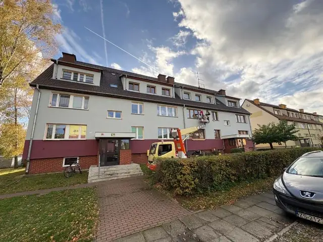
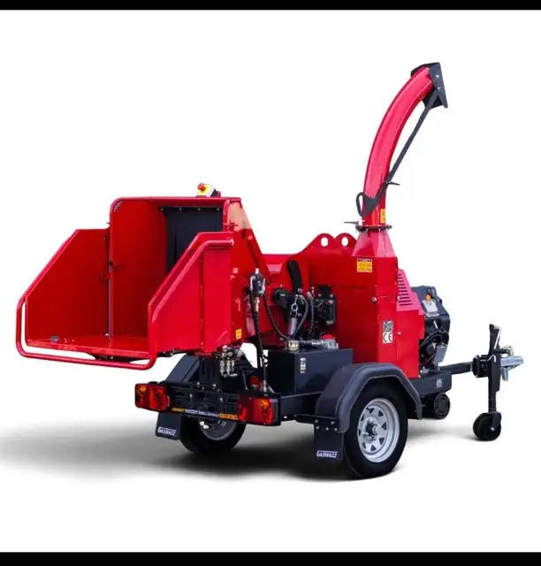
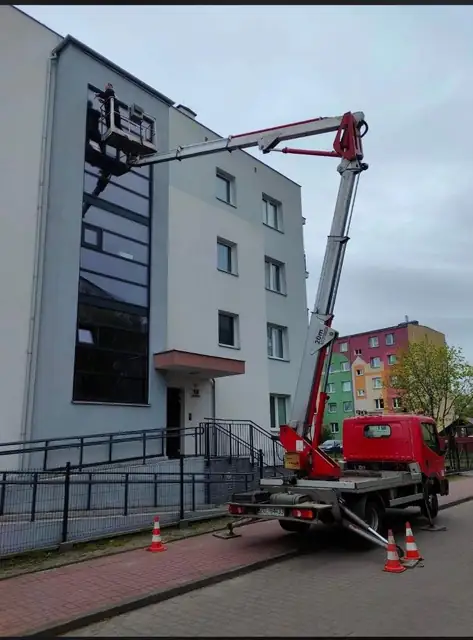
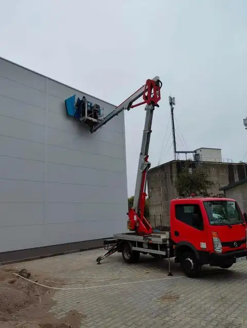
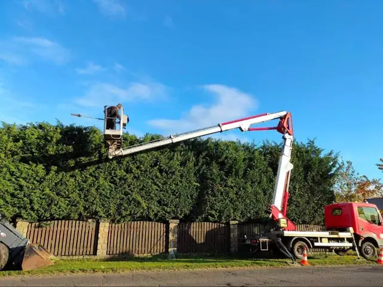
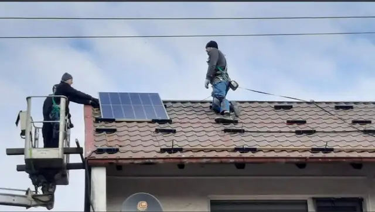
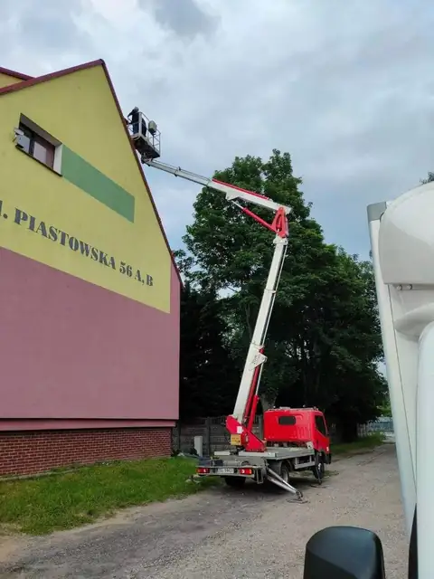
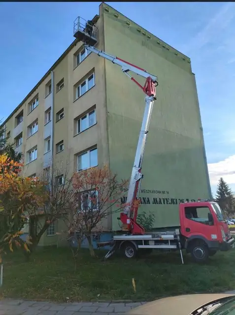
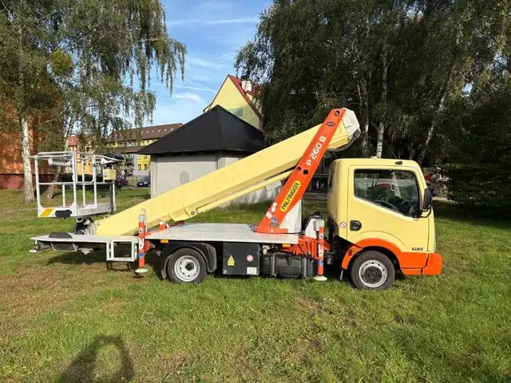

Mycie elewacji
Mycie ciśnieniowe elewacji domów, bloków i obiektów firmowych.
Szczecin · Kliniska · Goleniów
Szczecin · Kliniska · Goleniów
Usługi na wysokościach w Szczecinie i okolicach — mycie i malowanie elewacji oraz dachów, mycie hal, wycinka drzew i wynajem podnośnika z operatorem.

O nas
Usługi na wysokościach w Szczecinie i okolicach: mycie i malowanie elewacji oraz dachów, mycie hal, prace zielone i wynajem podnośnika z operatorem.
Nie sprzedajemy „pakietów premium”. Pokazujemy realizacje. Jak chcesz wycenę — zadzwoń albo napisz na Facebooku.
Do 26 m
Podnośnik 20 m i maszyna ~26 m. Dobieramy sprzęt do wysokości.
Lokalnie
Szczecin, Kliniska, Goleniów i okolice — szybki dojazd, konkretny termin.
Z terenu
Zdjęcia z prawdziwych zleceń — bloki, domy, hale, dachy.
Oferta
Mycie, malowanie, montaże, prace zielone i wynajem — Szczecin i okolice.

Mycie ciśnieniowe elewacji domów, bloków i obiektów firmowych.

Malowanie elewacji domów i bloków bez rusztowań — z kosza podnośnika.

Czyszczenie i malowanie dachów z podnośnika — bezpiecznie i dokładnie.

Mycie kostki brukowej i nawierzchni — podjazdy, chodniki, place.

Karczowanie działek oraz zrąbianie rębakiem Lezard R25 — rozdrabnia kołki do 15 cm.

Wywóz materiałów i odpadów wywrotką do 3,5 t.

Kontrolowane ścinanie drzew z kosza — przy budynkach i w trudnym terenie.

Czyszczenie rynien i obróbek dachowych z kosza podnośnika — bez rusztowań.
Wynajem podnośników z operatorem na godziny — 20 m i ~26 m.
Mycie elewacji i ścian hal produkcyjnych oraz obiektów przemysłowych.

Mycie okien i witryn na wysokości z kosza podnośnika — bloki, biura, obiekty firmowe.

Montaż i demontaż reklam, banerów i oznakowań na elewacjach — szybko i bezpiecznie.

Skracanie i formowanie wysokich żywopłotów z kosza — równo i bez rusztowań.

Wsparcie montażu paneli PV na dachach — podawanie i prace na wysokości z podnośnika.

Prace przy kominach i na krawędzi dachu z kosza podnośnika — bezpiecznie, bez rusztowań.

Podnoszenie materiałów do 200 kg na dach lub balkon — bez noszenia po schodach.

Wymiana lamp ulicznych, parkowych i oświetlenia na wysokości z kosza podnośnika.

Prace budowlane i montażowe na elewacjach oraz dachach — z kosza do 26 m.

Wiercenie studni głębinowych sprzętem mobilnym — także na działkach i w ogrodach.
Potrzebujesz wyceny? Zadzwoń — dobierzemy sprzęt i termin.
796 006 479Przebieg
Od telefonu do skończonej roboty.
Numer 796 006 479 albo Facebook. Podaj adres i zakres prac.
Dobieramy 20 m albo ~26 m. Dostajesz konkretną cenę i dzień.
Przyjeżdżamy ze sprzętem i operatorem. Robota zrobiona na miejscu.
Zadzwoń — powiemy, który sprzęt jedzie i kiedy możemy być u Ciebie.
Sprzęt
Podnośnik Multitel 20 m oraz Palfinger 26 m, nowy rębak Lezard R25 i wywrotka.

Realizacje
Prawdziwe zlecenia — Szczecin, Kliniska, Goleniów.
Pytania
Krótko i na temat — zanim zadzwonisz.
Obszar działania
Zależy od wysokości, czasu i dojazdu. Po krótkim opisie dostajesz konkretną wycenę — nie widełki z internetu.
Podnośnik 20 m oraz maszyna do ok. 26 m. Oba z operatorem.
Mycie i malowanie elewacji oraz dachów, mycie okien trudno dostępnych, mycie polbruków i hal, czyszczenie rynien, montaż reklam i paneli fotowoltaicznych, karczowanie, ścinanie drzew, skracanie żywopłotów, prace przy kominach, transport materiałów do 200 kg, wymiana lamp i oświetleń, prace budowlane na wysokościach, wywóz wywrotką oraz wynajem podnośnika z operatorem.
Tak — malowanie elewacji domów i bloków z kosza podnośnika, bez rusztowań.
Tak — nowy rębak Lezard R25 rozdrabnia kołki do 15 cm oraz wywóz wywrotką do 3,5 t.
Najszybciej zadzwoń albo napisz na Facebooku. Wystarczą zdjęcia obiektu i krótki opis.
Tak — to nasz główny teren. Dojeżdżamy też do Police, Stargardu i okolic na zapytanie.
Tak — wynajem podnośnika 20 m lub ~26 m z operatorem na godziny. Sprawdź dostępność telefonicznie.
Lokalnie
Świadczymy usługi podnośnikiem koszowym z operatorem na terenie Szczecina, Klinisk Wielkich i Goleniowa. Wykonujemy mycie i malowanie elewacji bez rusztowań, mycie i malowanie dachów, mycie okien trudno dostępnych, montaż reklam i paneli fotowoltaicznych, mycie polbruków, mycie hal produkcyjnych, czyszczenie rynien oraz prace zielone: karczowanie działek, ścinanie drzew z podnośnika, skracanie żywopłotów, zrąbianie rębakiem Lezard R25 (kołki do 15 cm) oraz wywóz wywrotką do 3,5 t.
Flota: podnośnik 20 m i Palfinger ~26 m. Wynajem podnośnika z operatorem na godziny — wycena po krótkim opisie zlecenia. Zadzwoń: 796 006 479 lub 508 053 004.
Kontakt
Szczecin, Kliniska, Goleniów. Najszybciej telefon — zdjęcie na Facebooku też wystarczy.